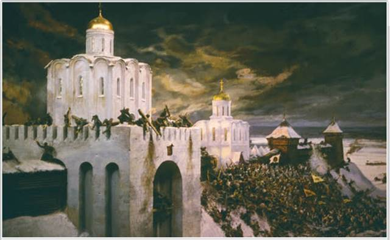
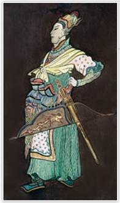
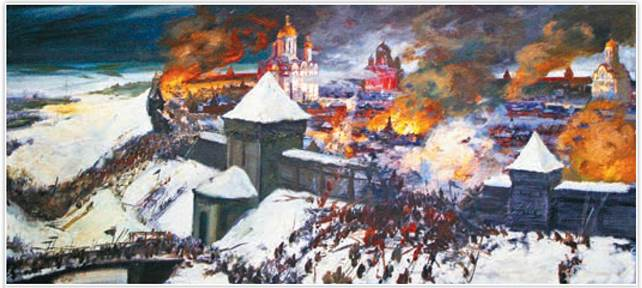
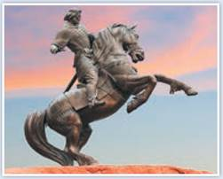
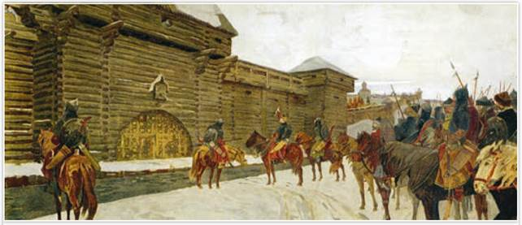
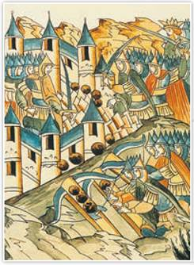

Решающий штурм Владимира войском хана Батыя 7 февраля 1238 г. Художник Е. Дешалыт. 1972 г. Владимиро-Суздальский музей-заповедник
Сражение за Владимир длилось 5 дней, завершившись штурмом, разграблением и уничтожением города напавшими на Русь монголами.
РОССИЯ
МИР
1. Завоевательные планы Чингисидов. На ханский престол Монгольской империи могли претендовать только прямые потомки великого хана — Чингисиды. Преемником Чингисхана стал его третий сын Угедей. Другим наследникам правитель выделил улусы — отдельные территории в пределах огромной монгольской державы. Западным улусом владел старший сын Чингисхана Джучи, затем — сын Джучи по имени Бату.

Батый. С китайского рисунка XIII в.
Какие детали изображения подчёркивают знатное происхождение Батыя?
«Великий сотрясатель вселенной» завещал своим детям и внукам расширять границы государства монголов — «вплоть до тех мест, куда достигнет копыто монгольской конницы». В 1235 г. на курултае Чингисиды приняли решение о походах на запад и восток. Общемонгольский поход на запад возглавил Бату. На Руси его станут называть царём Батыем. Правой рукой Батыя стал опытный полководец Субедей. В улус Джучи, помимо Сибири и части Хорезма, были включены и европейские земли, хотя их только предстояло покорить.
Первый удар Батый нанёс по Волжской Булгарии в 1236 г. Несмотря на упорное сопротивление булгар, монголы завоевали их государство. В дальнейшем были разбиты половцы, башкиры, буртасы. Покорённые племена и народы пополняли ряды монгольской армии.
2. Расстановка сил перед нашествием. Учёные полагают, что армия Батыя насчитывала не более 120 тыс. человек. Русь могла выставить 50—80 тыс. воинов, в большинстве пеших. Монголы сражались только конными, что давало им большое преимущество. К тому же единой армии раздробленных русских земель не существовало. Накануне нашествия князья вели междоусобные войны — долгие и ожесточённые. Объединиться для отпора внешнему врагу они не стремились.
Подробнее. Не только численное превосходство было на стороне Батыя. Монголы хорошо освоили науку ведения войны: запутывали ложным отступлением, устраивали засады, вели разведку перед боем, имели быстрых гонцов для связи. Лучники изматывали противника градом стрел, затем в бой вступала тяжёлая кавалерия. Самая мощная на то время осадная техника позволяла монголам брать любые крепости. Но память о битве на реке Калке приводила князей к мысли, что степняков надо встречать не в поле, а в городе. На Руси считали, что монголы, как и половцы, не умели осаждать города. На самом деле деревянные стены русских крепостей могли спасти от половецких набегов, но не от монголов.
Для конной армии степняков продвижение через дебри лесов и непроходимые болота было невозможно, поэтому Батый решил идти на Русь зимой, чтобы по руслам замёрзших рек, как по дорогам, двигаться от города к городу. На Руси, конечно, знали о судьбе Волжской Булгарии, но вряд ли рассчитывали на зимнюю войну, зимой князья обычно не воевали.
3. Гибель Рязани. В декабре 1237 г. войско Батыя подошло к границе Рязанской земли. Хан потребовал от жителей Рязани «десятой части от всего». Вступив в переговоры, рязанцы ответили: «Когда нас не будет, всё ваше будет». Тогда Батый осадил город.
Уничтожив Рязань, завоеватели двинулись вглубь русских земель. При слиянии рек Москвы и Оки они увидели бревенчатый Коломенский кремль. У стен Коломны за надолбами (кольями, вбитыми в лёд) изготовилось объединённое войско — полки рязанского князя Романа, дружина Всеволода Юрьевича — сына великого владимиро-суздальского князя, отряды из Пронска и Москвы. Началась жестокая битва. Победа в ней дорого обошлась монголам — в сражении погиб один из сыновей Чингисхана. Большинство русских воинов, включая рязанского князя, также погибли в бою. Коломна была сожжена дотла. Оставшиеся в живых во главе с Всеволодом Юрьевичем отступили к Владимиру.

Старая Рязань в огне. 1237 г. Художник Е. Дешалыт. 1969 г.
От горящих монгольских стрел пылали крепость и кровли домов. С крепостных стен рязанцы поливали врагов горячей смолой, бросали на них ледяные глыбы. На шестой день осады монголы подвели стенобитные машины и прорвались в город. К вечеру стольный град Рязань навсегда перестал существовать. Позднее столицу Рязанской земли перенесли в Переяславль-Рязанский (современная Рязань). В наши дни на месте погибшего города на берегу Оки стоит лишь село с названием Старая Рязань.
ЧЕСТЬ И СЛАВА ОТЕЧЕСТВА

Памятник Евпатию Коловрату. Скульптор О. Седов. 2007 г. Рязань
«Повесть о разорении Рязани Батыем» рассказывает о подвиге рязанского боярина Евпатия Коловрата. Он ездил послом в Чернигов, а вернувшись, увидел выжженную родную Рязань. Боярин с дружиной стал мстить врагам. «И бил их Евпатий так нещадно, что и мечи притуплялись, и брал он мечи татарские и сёк ими», — писал автор «Повести...». Но силы оказались не равны. Коловрат и почти вся его дружина пали под камнепадом из монгольских катапульт. Удивлённый их отчаянной смелостью, Батый произнёс: «О, Евпатий! Хорошо ты меня попотчевал... и многих богатырей сильной моей Орды побил... Если служил бы ты мне, держал бы я тебя у сердца своего!»
4. Разорение Владимиро-Суздальской земли. В середине января 1238 г. монгольская конница подошла к Москве. Москвичи во главе с Филиппом Нянькой, воспитателем великокняжеского сына Владимира, отчаянно сражались за свой небольшой городок, но он был сожжён врагом, сами они погибли. Воеводу Филиппа Няньку хан приказал казнить, а княжича пленил.
Великий князь Юрий Всеволодович уехал из Владимира собирать ополчение, оставив сыновей Всеволода и Мстислава оборонять столицу. В феврале 1238 г. армия Батыя подступила к Владимиру. Из Суздаля монголы пригнали пленников, заставили их возвести вокруг Владимира тын из брёвен и подтащить на 150 шагов катапульты.

Враг под стенами. Художник А. Максимов
Захватив Суздаль, ордынцы изготовились к штурму Владимира. Зная, что Батый милует только рабов, княжеская семья и многий простой люд предпочли смерть бесчестью.
Вскоре начался штурм. Через пробитую в крепостной стене брешь враг ворвался в город. Епископ Митрофан, жена князя Юрия с дочерьми, жёнами сыновей и внучатами, а также простой люд затворились в Успенском соборе. Захватчики обложили храм брёвнами и подожгли. Укрывшиеся в нём люди погибли от огня и дыма, а кто выбрался — нашёл смерть от кривой монгольской сабли. Монголы разграбили храм. С Владимирской иконы Божией Матери они содрали драгоценный оклад, но древняя реликвия не пропала.
За февраль 1238 г. монголы взяли 14 русских городов: Ростов, Тверь, Дмитров, Переяславль-Залесский, Юрьев-Польский и др. По кратчайшему пути Батый пошёл на новгородский «пригород» Торжок, а отряд темника Бурундая через Углич отправился к реке Сити, где находился стан великого князя Юрия Всеволодовича. 4 марта 1238 г., сообщает Новгородская первая летопись, «начал князь полк ставить около себя, и внезапно татары напали; князь же не успел ничего... и живот свой скончал тут». В битве на реке Сити пали почти все русские воины, среди них были и удельные князья. Епископ Кирилл нашёл после битвы обезглавленное тело великого князя Юрия Всеволодовича. Но земли за Ситью не были разорены, и на Новгород монголы уже не пошли: «великую язву понесли, пало их немалое множество», — написал древнерусский автор.
5. Батый в Новгородской земле и «злой город» Козельск. В феврале 1238 г. армия Батыя осадила Торжок. Горожане во главе со своим посадником держались. «...Обстреливали... (город) из камнемётных орудий две недели, — читаем в Новгородской первой летописи, — и изнемогали люди в городе, а из Новгорода им не было помощи...» В начале марта 1238 г. Торжок пал. Редкие уцелевшие его жители бежали из города. За ними гнались монголы и «секли людей, как траву». За эти две недели героического сопротивления началась весенняя распутица.
Не дойдя 100 км до Новгорода, у Игнач-креста Батый остановился и через не затронутое войной смоленское и черниговское пограничье стал отходить к степям. Возможно, хан испугался весеннего «пробуждения» болот, непроходимых для конницы. В верховьях Оки на семь недель задержал монголов городок Козельск, где княжил малолетний князь Василий. Под Козельском пало 4 тыс. монгольских воинов, среди них трое сыновей темников. «О князе Василии не ведомо это, — пишет русский летописец, — некоторые говорят, что в крови утонул, потому что был ребёнок». Монголы, раздосадованные большой потерей своего войска, прозвали Козельск «злым городом».

Оборона Козельска. Миниатюра из летописи
«Наш князь младенец, но мы, как правоверные, должны за него умереть, чтобы в мире оставить по себе добрую славу... головы свои положить за христианскую веру», — решили горожане на совете. Когда пороки (осадные орудия) пробили крепостные стены Козельска, его защитники вышли в чистое поле, уничтожили катапульты, но и сами сложили головы.
6. Батый в Южной Руси и Центральной Европе. В 1239—1241 гг. Батый совершил поход на Южную и Юго-Западную Русь. В марте 1239 г. монголы завоевали Переяславль, в октябре — Чернигов. В сентябре 1240 г. Батый подошёл к Киеву. По свидетельству летописца, в городе «ничего не было слышно от скрипа множества монгольских телег, рёва верблюдов и ржания коней».
За Киев в то время соперничали великие князья Даниил Романович Галицкий и Михаил Всеволодович Черниговский, но оба отбыли в Польшу и Венгрию просить военной помощи. Обороной Киева руководил галицкий воевода Дмитр. Осада города шла три месяца. В начале декабря 1240 г. Батый «поставил пороки у Лядских ворот, — рассказывает летопись, — и били они день и ночь, и пробили стены... И тут было видно, как ломались копья и щиты разбивались в щепки, а стрелы помрачали свет».
Утром 6 декабря 1240 г. последние бои шли у Десятинной церкви. Горожане, спрятавшиеся в ней, рыли подземный ход, но своды его осыпались. От пожарища и под тяжестью толпы на хорах рухнули стены древнего храма. К этому времени Киев уже пал. Раненый воевода Дмитр попал в плен, но был пощажён Батыем «мужества его ради». Позже папский посол Дж. Плано Карпини увидел на месте ещё недавно огромного Киева лишь селение в 200 домов.
В 1241 г. монголы воевали в Галицко-Волынской Руси. Пали Владимир-Волынский и Галич, но некоторые города устояли. Батый не стал их штурмовать. Полководец Батыя Байдар взял столицу Польши Краков и разорил многие польские земли. В апреле 1241 г. он разбил объединённую польско-немецкую армию у города Легница. В том же 1241 г. монгольская армия разгромила Венгрию.
В 1242 г. Батый закончил свой западный поход на берегах Адриатического моря. Хан получил известие о смерти Угедея. Курултай Чингисидов должен был избрать нового великого хана. Но это была лишь одна из причин прекращения войны в Европе. Батый видел, что Русь и европейские страны с их лесами, горами и снегами не пригодны для расселения кочевников. Хан решил обосноваться в Поволжских, Прикаспийских и Причерноморских степях, вошедших в состав его улуса Джучи. Отсюда Батый мог удерживать в повиновении пограничную ему Русь. Для прочих европейцев нашествие Батыя стало лишь кошмаром, который для них миновал.
ПОДВЕДЁМ ИТОГИ
Политика Чингисхана по расширению территории Монгольского государства была продолжена в ходе западного похода Батыя. Его войска разгромили Волжскую Булгарию и подчинили себе Половецкую степь, совершили несколько походов на русские земли. Большая часть Руси была разорена монголами.
Вопросы и задания
|
Даты походов |
Завоёванные города |
Работаем с хронологией
Расположите в хронологической последовательности события:
Работаем с источником
Прочитайте отрывок из книги историка Р. Почекаева «Батый» и ответьте на вопросы.
В 1235 г. было принято решение о походе на запад, ставшем не только важной страницей в биографии Бату, но и одним из переломных этапов в истории Монгольской империи и христианского мира, поскольку именно в результате этого похода сложились западные границы империи и европейцы открыли для себя бескрайнюю Азию. Бату стал предводителем этого похода — сначала номинально, а затем и фактически, что в немалой степени способствовало росту его авторитета и могущества в дальнейшем. После смерти в конце 1241 — начале 1242 г. Угедея и Чагатая, сыновей Чингисхана, Бату стал главой рода Чингисидов — сначала также номинально, но к концу 1240-х гг. обрёл и реальную власть в семействе Чингисхана и империи.
Работаем с понятиями
Что такое улус? Приведите исторический факт, связанный с этим понятием.
ДОПОЛНИТЕЛЬНЫЕ МАТЕРИАЛЫ
«УЧИТЕЛЮ И УЧЕНИКУ».
Материалы к параграфу на портале «История.РФ».